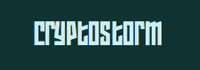
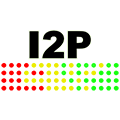
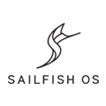

Hallo, schön das du hier bist und danke für dein Interesse.
Diese Seite bietet dir eine Fülle an Informationen und Möglichkeiten, wie du deine Privatsphäre schützen
und dich gegen die Gier nach deinen -persönlichsten- Daten der (Werbe-)Netzwerke und mittlerweile auch staatlichen Organisationen
behaupten kannst. Wenn du quasi noch ein Greenhorn auf diesem Gebiet bist wirst du sowohl überrascht als auch schockiert sein
welche Spuren du eigentlich im Netz hinterlässt.
Ich empfehle dir deine Tour durch die Seite mit einem Klick auf den Button zu beginnen.
Du bist erfahrener Anwender?
Dann findest du hier sicher auch einige Anregungen und kannst über das Menü oben direkt zu den für
dich interessanten Themen springen. Außerdem würden wir uns freuen, wenn du uns mit konstruktiven Themen- oder Programmvorschlägen unterstützt.
andere Sprachen: 繁体中文 Español English Italiano Русский
Von mir für euch: Privatsphäre-respektierende, "hackbare" Suchmaschine

Beispielsuche: Edward Snowden
privatesearch.it-sec.rocks ist die neue Privatsphäre respektierende und stark konfigurierbare Suchmaschine mit exzellenten Ergebnissen.
Es ist Open Source, komplett werbefrei, logt keine IPs und verfolgt kein Nutzerverhalten.
Privatsphäre? Du hast sicher nichts zu verbergen. Richtig? Richtig. Falsch!
Ganz nüchtern betrachtet ist Verschlüsselung ein Mechanismus zur Geheimhaltung von Daten, aber diese Betrachtungsweise ist gleichzeitig etwas problematisch. Leider wurden die meisten in dieser Gesellschaft dazu konditioniert, bei dem Wort Geheimhaltung sofort an böse Absichten zu denken.
Daher gebe ich dir eine andere Perspektive: Verschlüsselung ist ein Kontrollmechanismus.
Das will erklärt sein, am besten an Hand einer Parallele: Hast du eine Wohnungstüre? Ist die nachts geschlossen? Warum? Hast du etwas zu verbergen? Wer nichts zu verbergen hat, braucht auch keine Türe, nicht wahr? Nicht wahr! Du hast nicht unbedingt etwas zu verbergen. Viel mehr legst du (hoffentlich) einfach nur Wert darauf, zu kontrollieren, wer deine Wohnung betritt. Immerhin ist es eine traurige, aber gegebene Tatsache, dass wir den meisten unserer Mitmenschen nicht pauschal vertrauen können.
Verschlüsselung ist das digitale Äquivalent dazu. Sie ist wie ein Vorhängeschloss vor deinen Daten, und das Passwort ist der Schlüssel. Es spricht nichts dagegen, vertrauten Menschen deine Daten zu zeigen, aber unter deiner Kontrolle. So kann dich niemand bevormunden oder dein Urteil ignorieren. Heute ist das noch viel wichtiger geworden, da wir unser digitales Leben überallhin mitnehmen: Mobile Geräte wie Smartphones und Laptops können jederzeit verlorengehen oder gestohlen werden. Dann ist eine Person, der du vielleicht nicht vertrauen kannst, im Besitz deiner Daten. Und Daten sind heutzutage Gold wert. Selbst wenn du mit dem Dieb oder Finder alle deine Daten teilen würdest, so sollte er dich doch wenigstens dafür bezahlen.
Hier den ganzen Beitrag lesen
Globale Massenüberwachung - Die "Fourteen Eyes"
Das UKUSA Abkommen ist ein Abkommen zwischen Großbritannien (genauer UK), den USA, Australien, Kanada und Neuseeland,
um gemeinschaftlich Daten zu sammeln, zu analysieren und untereinander auszutauschen. Mitglieder dieser Gruppe,
bekannt als "Five Eyes", konzentrieren sich auf das Sammeln und analysieren vertraulicher Daten aus unterschiedlichen Teilen der Erde.
Während die Länder der Five Eyes zugestimmt haben sich nicht gegenseitig auszuspionieren, haben Enthüllungen von Snowden gezeigt
das manche Five Eyes Mitglieder die Bürger des Anderes überwachen und diese Erkenntnisse teilen um
einen Bruch innerstaatlichen Rechts zu vermeiden welches jedes Land für sich davon abhält die eigenen Bürger zu überwachen.
Die Five Eyes Allianz kooperiert auch mit Gruppen anderer Länder, um Informationen zu tauschen (und bilden so die "Nine Eyes" und "Fourteen Eyes").
Was auch immer die Absprachen sind, es ist erwiesen, dass die Five Eyes und ihre Partner sich gegenseitig ausspionieren können und das auch tun.
Five Eyes
2. Kanada
3. Neuseeland
4. Großbritannien (UK)
5. Vereinigte Staaten von Amerika
Nine Eyes
7. Frankreich
8. Niederlande
9. Norwegen
Fourteen Eyes
11. Deutschland
12. Italien
13. Spanien
14. Schweden
Warum ist es nicht ratsam einen in der USA beheimateten Dienst zu nutzen?

In den USA ansässige Dienste sind wegen der staatlichen Überwachungsprogramme nicht zu empfehlen.
Sogenannte National Security Letters (NSLs) und Verschwiegenheitsverpflichtungen ("Gag Order") der Unternehmen verbieten es
dem Empfänger über eine Anfrage staatlicher Behörden zu reden.
Diese Kombination erlaubt es der Regierung im Geheimen Firmen dazu zu zwingen kompletten und uneingeschränkten Zugang zu
Benutzerdaten zu erlangen, was mit dem NSL und der "Gag Order" also ein hervorragendes Werkzeug staatlicher Überwachung an de Hand gibt.
Ein trauriges dieser Beispiele ist Lavabit - einem mittlerweile eingestellten Anbieter sicherer Emails, gegründet von Ladar Levison. Das FBI verlangte die Herausgabe von Snowdens Aufzeichnungen nachdem sie herausgefunden hatten das er den Dienst benutzt hatte. Da Lavabit keine Logdateien anfertigt und der Inhalt der Emails verschlüsselt gespeichert wurde, überreichte das FBI eine Vorladung (inklusive "Gag Order") um an die SSL Schlüssel zu gelangen. Diese Schlüssel im Besitz zu haben würede es ihnen erlauben die Kommunikation JEDES Nutzers (sowohl Metadaten als auch unverschlüsselte Inhalte und Passwörter) in Echtzeit aus- und mitzulesen. Nicht nur die von Snowden.
Letztlich musste Levison die SSL Schlüssel überreichen und schloss seine Firma zur gleichen Zeit. Nun drohte die US Regierung Levison mit Gefängnis, mit der Begründung das Schließen seines Dienstes verstoße gegen den Gerichtsbeschluß.
Schlüssel Offenlegungs Gesetz - Wer darf Autorität ausüben?
Das obligatorische "Schlüssel Offenlegungs Gesetz" (key disclosure law) verlangt von jemandem Sicherheitsschlüssel an Strafverfolgungsbehörden zur Durchführung strafrechtlicher Ermittlungen zu übergeben. Wie diese Gesetze umgesetzt werden (wer legal gezwungen werden kann zu helfen) variiert je nach Land aber ein Haftbefehl ist in der Regel erforderlich. Abwehr gegen dieses Schlüssel Offenlegungs Gesetz beinhaltet Steganographie und Datenverschlüsselung nach dem Konzept der glaubhaften Abstreitbarkeit.
Steganographie beinhaltet versteckte sensible Informationen (welche verschlüsselt sein können) innerhalb gewöhnlicher Daten (zum Beispiel: ein Bild) zu verschüsseln und es dann in einer Audiodatei verstecken. Mit glaubhafter Abstreitbarkeit meint man, Daten so zu verschlüsseln das ein Gegner nicht beweisen kann das Daten, hinter denen er her ist, existieren (zum Beispiel: entschlüsselt ein Passwort harmlose Daten und ein anderes Passwort, auf die gleiche Datei angewandt, entschlüsselt sensible Daten).
Weitere Informationen zum Thema
- Avoid all US and UK based services
- https://de.wikipedia.org/wiki/UKUSA-Vereinbarung
- http://de.wikipedia.org/wiki/Lavabit
- https://en.wikipedia.org/wiki/Key_disclosure_law
- http://en.wikipedia.org/wiki/Portal:Mass_surveillance
VPN Anbieter mit extra Sicherheit und Privatsphäre - unabhängig & unverbindlich
| Sortierbare VPN-Anbieterliste | Preis im Jahr | Kostenlose Testphase | # Servers | Zuständigkeit | Website |
|---|---|---|---|---|---|
| 54 € | ja | 162 | Italien | AirVPN.org | |

|
45 € | ja | 5 | Schweden | AzireVPN.com |

|
99 € | ja | 27 | Hong Kong | blackVPN.com |
|  | $ 52 | ja | 18 | Island | Cryptostorm.is |

|
39,99 € | nein | 432 | Nord-Zypern | EarthVPN.com |

|
$ 99.95 | ja | 145 | Britische Jungferninseln | ExpressVPN.com |
| $ 35.88 | nein | 27 | Schweden | FrootVPN.com | |

|
$ 65.04 | ja | 88 | Malaysia | hide.me |

|
$ 100 | ja | 21 | Gibraltar | IVPN.net |

|
60 € | ja | 168 | Schweden | Mullvad.net |

|
$ 69 | ja | 475 | Panama | NordVPN.com |

|
$ 84 | ja | 39 | Schweden | OVPN.com |

|
124.95 € | nein | 41 | Panama | Perfect-Privacy.com |

|
Free | ja | 112 | Schweiz | ProtonVPN.com |

|
$ 90 | nein | 300 | Seychellen | Proxy.sh |

|
$ 39.95 | ja | 48 | Seychellen | Trust.Zone |

|
$ 39.99 | nein | 122 | Hong Kong | VPN.ht |

|
$ 35.88 | nein | 80 | Seychellen | VPNTunnel.com |
VPN ist kein Werkzeug für illegale Aktivitäten. Verlass dich nicht auf eine "no log" Politik.
Kriterien zur Wahl des VPN Anbieters
- Operiert außerhalb der USA oder anderer "Five Eyes" Länder. vermeide alle in US und UK beheimateten Dienste.
- OpenVPN Unterstützung.
- Datei-Tausch/ File-Sharing (P2P) wird auf bestimmten Servern geduldet.
- Akzeptiert Bitcoin, Bargeld oder Prepaid Karten als Zahlungsmethode.
- Benötigt keine persönlichen Informationen, um ein Benutzerkonto zu erstellen. Nur Benutzername, Passwort und Email.
Ich stehe in keinerlei geschäftlicher Beziehung mit diesen VPN Anbietern.
Nur so kann ich ernsthafte und unabhängige Empfehlungen aussprechen.
Weitere Informationen zu VPN
- How To Make VPNs Even More Secure
- VPN, privacy and anonymity - SpiderOak
- Beware of False Reviews - VPN Marketing and Affiliate Programs
- Which VPN Services Take Your Anonymity Seriously?
(Achtung: Die erst gelisteten Anbieter bei TorrentFreaks sind gesponsert!) - I am Anonymous When I Use a VPN - 7 Myths Debunked
(Achtung: Die Informationen sind zwar empfehlenswert aber der Artikel wird zur Selbstpropagation genutzt) - Proxy.sh VPN Provider Sniffed Server Traffic to Catch Hacker
- Ethical policy - All of the reasons why Proxy.sh might enable logging
- IVPN.net will collect your email and IP address after sign up
Read the Email statement from IVPN. - blackVPN announced to delete connection logs after disconnection
Was ist ein Warrant Canary?

Als "Warrant Canary" bezeichnet man ein Dokument oder Bild, das auf einer Seite einsehbar ist. Dies zeigt an, dass es in einem bestimmten Zeitabschnitt keine Zugriffe oder Anfragen von Ermittlungsbehörden gab. Wenn diese Datei eine gewisse zeitlang nicht aktualisiert wurde oder verschwindet ist das ein Zeichen dafür, dass der Anbieter eine Vorladung bekommen hat oder Daten offenlegen sollte. Dann sollte man den Dienst nicht mehr nutzen! Eingeführt wurden Warrant Canaries, um die so genannte Gag Order zu umgehen.
Warrant Canary Beispiele:
- https://proxy.sh/canary
- https://www.ivpn.net/resources/canary.txt
- https://www.ipredator.se/static/downloads/canary.txt
Weitere Informationen zum Warrant Canary
Browser Empfehlungen
Mozilla Firefox
Firefox ist schnell, zuverlässig, Open Source und respektiert deine Privatsphäre. Vergiss nicht die Optionen gemäß unseren Empfehlungen einzustellen: WebRTC und about:config und hol dir die Privatsphäre AddOns.
OS: Windows, Mac, Linux, Android, BSD.
 Der Tor Browser ist eine gute Wahl wenn du Plus an Anonymität wünscht. Es ist ein modifizierter Firefox und hat vorinstallierte Privatsphäre AddOns, Verschlüsselung und einen erweiterten Proxy.
Der Tor Browser ist eine gute Wahl wenn du Plus an Anonymität wünscht. Es ist ein modifizierter Firefox und hat vorinstallierte Privatsphäre AddOns, Verschlüsselung und einen erweiterten Proxy. Profil für den Firefox, insbesondere für anonymes und sicheres surfen gedacht.
Profil für den Firefox, insbesondere für anonymes und sicheres surfen gedacht.Erwähnenswert
- Links2 - ist ein leichtgewichtiger (textbasierter) Konsolenbrowser. Kann auch in einem grafischen Modus betrieben werden. Verfügbar für Linux (in den Repos) und mit CygWin auch unter Windows.
Browser Fingerabdruck - Ist dein Browser einzigartig?

Sobald du eine Webseite besuchst sendet dein Browser bereitwillig Daten über seine Konfiguration. Daten wie unterstützte Schriften, Browser Typ (UserAgent), Bildschirmauflösung und installierte AddOns. Wenn diese Art von Information einzigartig ist, ist es möglich dich zu identifizieren und mit Cookies zu verfolgen. EFF hat ein Tool namens Panopticlick entwickelt, um zu testen wie einzigartig dein Browser ist.
Wenn du weißt was die meisten Browser von sich preisgeben kann diese Erkenntnisse genutzt werden. Das bedeutet installierte Schriftarten, Plugins, und Erweiterungen zu verwenden, die von der Masse der Menschen genutzt werden . Du solltest einen gefälschten User Agent verwenden, um der großen Nutzerschaft besser zu entsprechen. Du solltest die gleichen Einstellungen aktiviert und deaktiviert haben, sowas wie DoNotTrack und WebGL. Dein Browser sollte so auffällig und gewöhnlich sein wie jeder andere auch. Deaktiviertes JavaScript, die Nutzung von Linux und sogar das Tor Browser Bundle wird dein Browser schnell aus der Masse herausstechen lassen.
Moderne Webbrowser sind nicht dazu entwickelt worden die persönliche Privatsphäre und Datenschutz zu gewährleisten. Es ist wohl besser freie Software Plugins wie PrivacyBadger, uBlock Origin und Disconnect zu nutzen als sich über seinen Fingerabdruck Gedanken zu machen. Diese respektieren nicht nur deine Freiheit, sondern auch deine Privatsphäre. Das wird dir mehr nutzen als zu versuchen den Fingerabdruck deines Browsers zu manipulieren.
weitere Information
- Wie einzigartig ist dein Browser? Peter Eckersley, Electronic Frontier Foundation.
- Firefox Privatsphäre AddOns.
- BrowserLeaks.com - Webbrowser Sicherheitstest, sagt dir welche persönlichen Daten ungefragt von dir erfasst werden, wenn du dich im Internet bewegst.
WebRTC IP Lücke - Wird deine IP verraten?
Auch wenn Software wie NoScript dies verhindern kann ist es gegebenefalls keine schlechte Idee das Protokoll direkt zu blockieren.
Wie kann ich WebRTC im Firefox abschalten?
Kurz und knapp: Setze "media.peerconnection.enabled" auf "false" in der "about:config".
Oder: Ich empfehle hier das Firefox AddOn Disable WebRTC!
Erklärung zum manuellen Abschalten:
- Gib "about:config" in der Firefox Adressleiste ein und drücke Enter.
- Bestätige "Ich werde vorsichtig sein, versprochen!" mit einem Klick darauf
- Suche nach "media.peerconnection.enabled"
- Doppelklicke darauf und der "Wert" sollte nun auf "false" stehen
- Super. Mach den WebRTC Test gleich nochmal.
Wenn du sicher gehen willst, dass jede WebRTC bezogene Funktion deaktiviert ist musst du folgende Einstellungen ändern:
- media.peerconnection.turn.disable = true
- media.peerconnection.use_document_iceservers = false
- media.peerconnection.video.enabled = false
- media.peerconnection.identity.timeout = 1
Nun kannst du 100% sicher sein, dass WebRTC deaktiviert wurde.
Und wie kann ich WebRTC im Google Chrome deaktivieren?
Dafür gibt es noch keine bekannte Lösung, nur ein Plugin, welches aber einfach umgangen werden kann. Benutze einfach Firefox stattdessen.
Was ist mit anderen Browsern?
Chrome auf iOS, Internet Explorer und Safari haben WebRTC noch nicht implementiert. Allerdings kann man wirklich nur empfehlen Firefox auf jedem Gerät zu verwenden.
Exzellente Firefox AddOns
Werbung blocken mit "uBlock Origin"

uBlock Origin Ein effizienter Blocker: Geringer Speicherbedarf und niedrige CPU-Belastung - und dennoch werden Tausende an Filtern mehr angewendet als bei anderen populären Blockern. AdBlock Plus wird nicht empfohlen, da dort "gute Werbung" angezeigt wird und das System dahinter ist nicht sehr transparent.
https://addons.mozilla.org/de/firefox/addon/ublock-origin/
Verhindert das Tracking durch Inhaltsabfragen mit "Decentraleyes"

Dieses Addon emuliert benötigte Inhalte lokal und sorgt so dafür, dass die Nutzung der Homepage ohne Funktionsbeeinträchtigungen ermöglicht wird, ohne das man euch durch diverse Anfragen dieser Dienste tracken kann. Das Addon funktioniert ohne Weiteres automatisch und verursacht keinerlei Verzögerung. Quellcode: GitHub.
https://addons.mozilla.org/firefox/addon/decentraleyes/
Cookies automatisch löschen mit "Cookie AutoDelete"

Entfernt Cookies automaitsch, sobald diese von allen offnen Tabs nicht mehr benötigt werden. Das Tracken durch das Auswerten von Cookies wird mit diesem Addon so gut wie verhindert.
https://addons.mozilla.org/firefox/addon/cookie-autodelete/
PrivacyBadger gegen Werbenetzwerke

Privacy Badger ist ein Browser AddOn das Werbenetzwerke und andere Drittanbieter die dich heimlich ausspionieren, welche Seiten du gerade besuchst und bereits besucht hast, blockt. PrivacyBadger blockiert automatisch das laden weiterer Daten aus und in Werbenetzen.
https://addons.mozilla.org/de/firefox/addon/privacy-badger17/
Gegen WebRTC mit "Disable WebRTC"
Disable WebRTC schützt dich zuverlässig gegen die WebRTC "Lücke" und versteckt deine echte IP.
https://addons.mozilla.org/en-US/firefox/addon/happy-bonobo-disable-webrtc/
Stoppe die Verfolgung mit "Disconnect"

Disconnect wurde 2011 von 2 ehemaligen Google Entwicklern und anderen Leuten gegründet. Das AddOn ist quelloffen und deine besuchten Webseiten etwa 27% schneller. Auch wird das Tracking von über 2,000 Drittanbieterseiten geblockt. Suchanfragen werden auch anonymisiert.
https://addons.mozilla.org/de/firefox/addon/disconnect/
Immer verschlüsseln mit "HTTPS Everywhere"

HTTPS Everywhere ist eine Firefox, Chrome und Opera Erweiterung, die deine Kommunikation mit vielen großen Websites verschlüsselt, so dass du sicherer surfst. Eine Zusammenarbeit zwischen "The Tor Project" und der "Electronic Frontier Foundation".
https://www.eff.org/https-everywhere
Scripte, Cookies und Cross-Site-Anfragen blockieren mit "uMatrix"

Mit ein paar Handgriffen lassen sich alle Skripte, Cookies und sonstige Anfragen durch uMatrix analysieren und blocken. Das gibt euch volle Kontrolle darüber, welche Information ihr von euch preisgeben wollt.
https://addons.mozilla.org/firefox/addon/umatrix/
Hol dir die absolute Kontrolle zurück mit "NoScript Security Suite"

Sehr anpassbares Plugin um selektiv Javascript, Java und Flash auf vertrauenswürdigen Seiten zu erlauben. Nicht für den Normal- oder Gelegenheitsnutzer, da es gutes technisches Hintergrundwissen voraussetzt.
https://addons.mozilla.org/de/firefox/addon/noscript/
Firefox: Einstellungen zum Datenschutz in der "about:config"
Vorbereitung:
- Gib "about:config" in die Firefox Adressleiste ein und drücke Enter.
- Bestätige "Ich werde vorsichtig sein, versprochen!"
- Folge den unten stehenden Anweisungen...
Fangen wir an:
- privacy.trackingprotection.enabled = true
- Das ist der neue Trackingschutz von Mozilla.
- geo.enabled = false
- Deaktiviert Geolocation (zBsp Ortung per IP).
- browser.safebrowsing.enabled = false
- Deaktiviert Googles Safe Browsing und Phishingschutz. Sicherheitsrisiko aber erhöht Datenschutz.
- browser.safebrowsing.malware.enabled = false
- Deaktiviert Googles Safe Browsing und Schadware Prüfung. Sicherheitsrisiko aber erhöht Datenschutz.
- dom.event.clipboardevents.enabled = false
- Deaktiviert die Funktion, dass Webseiten darüber informiert werden wenn man etwas kopiert, einfügt oder ausschneidet und wo auf der Webseite man das tut.
- network.cookie.cookieBehavior = 1
- Cookies deaktivieren
- 0 = Akzeptiert alle Cookies
- 1 = Akzeptiert nur Cookies der aufgerufenen Seite (blockt Drittanbieter Cookies)
- 2 = Blockt alle Cookies
- network.cookie.lifetimePolicy = 2
- Cookies werden beim Beenden der Sitzung gelöscht
- 0 = Akzeptiert jeden Cookie
- 1 = Fragt bei jedem Cookie nach
- 2 = Nur für die aktuelle Sitzung
- 3 = Akzeptiert für "N" Tage
- browser.cache.offline.enable = false
- Deaktiviert Offline Zwischenspeicher.
- browser.send_pings = false
- Die Funktion würde genutzt werden, um die Klicks der Besucher einer Webseite zu verfolgen.
- webgl.disabled = true
- WebGL ist ein potenzielles Sicherheitsrisiko. Quelle
- dom.battery.enabled = false
- Webseitenbetreiber könnten damit den Batteriestatus der Notebooks / Smartphones von Besuchern der Seite abfragen. Quelle
- browser.sessionstore.max_tabs_undo = 0
- Auch wenn Firefox so eingestellt ist den Verlauf nicht zu speichern würden deine geschlossenen Tabs erst einmal zwischengespeichert werden.
Weitere Informationen
- mozillazine.org - Security and privacy-related preferences.
- user.js Firefox hardening stuff - This is a user.js configuration file for Mozilla Firefox that's supposed to harden Firefox's settings and make it more secure.
Empfehlenswerte E-Mail-Anbieter
| Email Anbieter | Existiert seit | Server | Speicher | Preis pro Jahr | Bitcoin | Verschlüsselung | eigene Domain möglich? |
|---|---|---|---|---|---|---|---|
 Mailbox.org |
2014 | Deutschland | 2 GB | 12 € | ja | integriert | ja |
 ProtonMail |
2013 | Schweiz | 500 MB | kostenlos | ja | integriert | ja |
 Tutanota |
2011 | Deutschland | 1 GB | kostenlos | nein | integriert | ja |
 Posteo |
2009 | Deutschland | 2 GB | 12 € | nein | integriert | nein |
 Runbox |
1999 | Norwegen | 1 GB | $ 19.95 | nein | nein | ja |
 Neomailbox |
2003 | Schweiz | 1 GB | $ 49.95 | ja | integriert | ja |
 CounterMail |
2010 | Schweden | 500 MB | $ 59 | ja | integriert | ja |
 StartMail |
2014 | Niederlande | 10 GB | $ 59.95 | nein | integriert | nein |
 KolabNow |
2010 | Schweiz | 2 GB | $ 60 | ja | nein | ja |
CryptoHeaven |
2001 | Kanada | 200 MB | $ 66 | nein | integriert | ja |
Wegwerf Email-Anbieter
- Wegwerfemailadresse.com - Wegwerf-eMail-Adresse ist ein kostenloses System für provisorische E-Mail-Adressen. Wenn du dich irgendwo registrieren und deine richtige Emailadresse nicht angeben möchtest, dann kannst du dir hier für 24 Stunden eine temporäre Adresse generieren.
- Squizzy - Squizzy.de stellt dir temporäre Wegwerf-E-Mail-Adressen zur Verfügung, um dich vor Spam zu schützen. Die E-Mail-Adresse verfällt nach 60 Minuten. Du kannst innerhalb des Zeitfensters eingehende E-Mails lesen und darauf antworten.
Werde dein eigener Mailanbieter mit einem eigenen Mailserver
Mailcow − Andre Peters hat hier ein wunderbares Script geschrieben, um einen eigenen sicheren Mailserver mit einem Fingerschnipp zu installieren. Es sind nur wenige Eingaben / Anpassungen nötig, um den Server nach wenigen Minuten in Betrieb zu nehmen. Geplant ist zukünftig auch CalDAV und CardDAV Unterstützung.
Mehr: Mailcow auf GitHub

Mit Mail-in-a-Box kannst du in ein paar einfachen Schritten dein eigener Mail-Diensteanbieter werden. Es ist irgendwie wie dein eigenes Gmail, aber mit voller Kontrolle. Technisch macht Mail-In-a-Box einen Cloud Server zum funktionierenden Mail-Server. Aber du musst kein Technologie-Experte sein, um es einzurichten.
Mehr: Mailinabox Homepage
Email Erweiterungen, die Privatsphäre schätzen
- gpg4usb - Ein einfach zu bedienendes Programm, um auch unterwegs Dateien und Dokumente zu verschlüsseln. Für Windows und Linux.
- Mailvelope - Browsererweiterung, die deine Emails nach dem OpenPGP Standard verschlüsselt.
- Enigmail - Erweiterung für Thunderbird. Ermöglicht Senden und Empfangen von verschlüsselten und signierten Emails via OpenPGP.
- TorBirdy - Erweiterung für Thunderbird, um sich über das TOR Netzwerk zu verbinden.
- Email Privacy Tester - Dieses Tool sendet eine Email an deine Adresse und führt Privatsphäre − bezogene Tests durch.
Weitere Informationen
Email Client Software
Thunderbird
 Thunderbird ist eine freie E-Mail-Anwendung, die man einfach einrichten und anpassen kann − und sie ist voll mit tollen Funktionen!. Thunderbird kann Email, Newsgroups, RSS Feeds und (XMPP, IRC, Twitter) Chat. Außerdem ist es durch tausende AddOns erweiterbar.
Thunderbird ist eine freie E-Mail-Anwendung, die man einfach einrichten und anpassen kann − und sie ist voll mit tollen Funktionen!. Thunderbird kann Email, Newsgroups, RSS Feeds und (XMPP, IRC, Twitter) Chat. Außerdem ist es durch tausende AddOns erweiterbar. Claws Mail ist ein freier und quelloffener Mail- und Newsclient. Es ist einfach zu konfigurieren und bietet eine Vielzahl an Features. Auch ist Gpg4win bereits enthalten, die GPG Verschlüsselung für Windows.
Claws Mail ist ein freier und quelloffener Mail- und Newsclient. Es ist einfach zu konfigurieren und bietet eine Vielzahl an Features. Auch ist Gpg4win bereits enthalten, die GPG Verschlüsselung für Windows.K9−Mail
K−9 Mail ist ein freies E−Mail−Programm für das mobile Betriebssystem Android. Es unterstützt das Abrufen von E−Mails per POP3 und IMAP von mehreren Mail−Konten. Bei der Benutzung von IMAP lässt sich pro Email−Ordner einstellen, ob Push−Mail verwendet werden soll. Außerdem wird MS Exchange und WebDAV unterstützt.
OS: Android
Erwähnenswert:
- Mailpile (Beta) - Moderner, schneller Webmail Client mit benutzerfreundlicher Verschlüsselung und Datenschutz Eigenschaften.
Email Alternativen
Bitmessage
 Bitmessage ist ein Verschlüsselungsprotokoll, das einen vertraulichen und anonymen Austausch von E-Mail-ähnlichen Nachrichten in einem Peer-to-Peer-Netzwerk ermöglichen soll. Das Protokoll und die Implementierung basieren auf der Bitcoin-Technik. Meta-Daten sind hier quasi obsolet.
Bitmessage ist ein Verschlüsselungsprotokoll, das einen vertraulichen und anonymen Austausch von E-Mail-ähnlichen Nachrichten in einem Peer-to-Peer-Netzwerk ermöglichen soll. Das Protokoll und die Implementierung basieren auf der Bitcoin-Technik. Meta-Daten sind hier quasi obsolet.
OS: Windows, Mac, Linux.
Retroshare
RetroShare ist ein freies Programm, das verschiedene verschlüsselte Kommunikationsmöglichkeiten und serverloses Filesharing zwischen Freunden (friend-to-friend) ermöglicht. Freunde werden in der Freundesliste mittels RSA-Schlüsseln zuverlässig identifiziert und authentifiziert. Es bietet mehrere Instant-Messaging-Möglichkeiten, einen E-Mail-Client, IP-Telefonie (VoIP), Videokonferenz, Feedreader sowie interne Foren und Kanäle, mit denen Mitteilungen öffentlich oder anonym an Freunde gesendet werden können.
OS: Windows, Mac, Linux, FreeBSD.
Web Suchmaschinen, die deine Privatsphäre respektieren
privatesearch | Searx
 Eine quelloffene Metasuchmaschine. Aggregation der Ergebnisse anderer Suchmaschinen, während keine Informationen über seine Nutzer gespeichert werden. Keine Protokolle, keine Werbung und keine Verfolgung/ tracking.
Eine quelloffene Metasuchmaschine. Aggregation der Ergebnisse anderer Suchmaschinen, während keine Informationen über seine Nutzer gespeichert werden. Keine Protokolle, keine Werbung und keine Verfolgung/ tracking.
DuckDuckGo
Die Suchmaschine, die dich nicht trackt. Etwas von DuckDuckGo's Code wird als freie Software auf GitHub gestellt aber die Kernsoftware ist proprietär. Firmensitz ist in den USA.
 Private Suche über Anbieter wie: Google, Yahoo, Bing und DuckDuckGo. Maskiert die IP Adresse, Cookies und andere persönliche Informationen des Nutzers.
Private Suche über Anbieter wie: Google, Yahoo, Bing und DuckDuckGo. Maskiert die IP Adresse, Cookies und andere persönliche Informationen des Nutzers.Erwähnenswert:
- MetaGer - MetaGer ist eine deutsche Metasuchmaschine im Internet, die an der Universität Hannover als Dienst des Regionalen Rechenzentrums für Niedersachsen entwickelt wurde. Seit 2012 wird MetaGer vom eingetragenen Verein SUMA-EV in einer Kooperation mit der Universität Hannover betrieben und weiterentwickelt.
- ixquick.com - Ixquick ist eine aus den Niederlanden stammende Metasuchmaschine, die sich freiwillig verpflichtet, private Daten von Nutzern nicht zu erfassen oder zu speichern. Zur Verfügung steht auch eine geschützte Anfrage per TLS-Verbindung. Darüber hinaus wird unter dem Namen Startpage eine weitere Suchmaschine angeboten, die anonym ausschließlich auf Google zurückgreift. Server auch in USA und Suchergebnisse enthalten gesponserte Links!
Verschlüsselte Sofortnachrichtendienste
Conversations | XMPP (mit OMEMO)
Conversations ist ein Programm, welches auf das XMPP Protokoll zurück greift. Damit ist größtmögliche Reichweite und Kompatibilität gewährleistet. Verschlüsselt wird per OMEMO.
OS: Android
ChatSecure | XMPP (mit OMEMO)
 ChatSecure ist ein freier und quelloffener Messenger mit OMEMO und OTR Verschlüsselung per XMPP (Jabber). Du kannst bestehende Jabber Server verwenden oder einen eigenen XMPP Server betreiben, für das Plus an Sicherheit.
ChatSecure ist ein freier und quelloffener Messenger mit OMEMO und OTR Verschlüsselung per XMPP (Jabber). Du kannst bestehende Jabber Server verwenden oder einen eigenen XMPP Server betreiben, für das Plus an Sicherheit.
OS: iOS andere OTR Clients.
Erwähnenswert:
- Gajim - Ein OpenSource Crossplattform Messenger für Desktop Betriebssysteme der das XMPP Protokoll verwendet und mit seiner Plug-in Struktur auch OMEMO beherscht. Damit kann man XMPP mit OMEMO auch auf Linux und Windows verwenden.
- Kontalk - Ein gemeinschaftlich betriebenes Instant-Messaging-Netzwerk. Die gesammte Kommunikation wird mittels OpenPGP Ende-zu-Ende verschlüsselt. Sowohl Verbindungen von Client-zu-Server als auch von Server-zu-Server sind durchgehend durch eine Transportverschlüsselung gesichert. Auf GitHub kann der Quellcode für den Server als auch für Android- und Desktopclient eingesehen werden.
- Ricochet - Ricochet ist eine experimentelle aber schon sichere Lösung, um komplett verschlüsselt und ohne Meta Daten zu hinterlassen zu kommunizieren. Dazu müssen jedoch alle Chatpartner zur gleichen Zeit online sein.HIER gibt es weitere Infos auf GitHub.
- Threema - Threema ist ein Crypto Messenger aus der Schweiz. Zwar nicht open source(!) aber bereits diverse Male reverse engineered wurden keine Schwachstellen in der Implementierung oder Backdoors entdeckt. Threema verschlüsselt Ende zu Ende, der Server in der Schweiz bildet nur das Relais. Da kein Telefonnummernabgleich nötig ist sind auch Metadaten kein großes Thema. Allemal besser als WhatsApp.
Weitere Informationen
- geheime Unterhaltungen während wir überwacht werden - firstlook.org
- Eine ausführliche und verständliche Analyse der Messengerlandschaft und Plädoyer für XMPPLink
Verschlüsselte Video & Sprach Messenger
Tox
Tox ist eine freie Peer-to-Peer-Instant-Messaging- und Videotelefoniesoftware, die verschlüsselten Datenaustausch ermöglicht. Das Ziel des Projekts ist es, eine sichere, aber dennoch einfach zu benutzende Kommunikationssoftware zu kreieren. Der gesamte Datenverkehr wird dabei mittels NaCl-Bibliothek verschlüsselt.
OS: Windows, Mac, Linux, Android, iOS.
Signal (Mobil)
 Signal ist eine mobile App von Open Whisper Systems. Die Organisation hat auch TextSecure entwickelt. Unterstützt Ende zu Ende Verschlüsselung für Telefonate.
Signal ist eine mobile App von Open Whisper Systems. Die Organisation hat auch TextSecure entwickelt. Unterstützt Ende zu Ende Verschlüsselung für Telefonate.
OS: iOS, Android.
Linphone
Linphone ist ein open source SIP Phone und freier VoIP service.Linphone ist mit Mobiltelefonen, Desktops und Browsern verwendbar. Für eine Ende zu Ende Verschlüsselung von Spach- und Videoanrufen wird ZRTP unterstützt.
OS: iOS, Android, Windows Phone, Linux, Windows, Mac, Browser (Web)
Erwähnenswert:
- Jitsi - Betriebssystemübergreifende Skype Alternative
- Ring (ehemals SFLphone) - Dezentrales, quelloffenes Peer to Peer Kommunikationsnetzwerk.
Verschlüsselte (selbst gehostete) Clouddienste
Nextcloud
Nextcloud ist eine freie Software für das Speichern von Daten auf, zum Beispiel, dem eigenen Server. Im Gegensatz zu kommerziellen Speicherdiensten kann Nextcloud auf einem privaten Server oder Webspace ohne Zusatzkosten installiert werden. Somit können gerade bei sensiblen Daten die Bedenken gegenüber einer Datenweitergabe und der damit einhergehenden Abgabe der Kontrolle über die Daten zerstreut werden.
Client OS: Windows, Mac, Linux, BSD, Unix, iOS, Android, Fire OS.
Server OS: Linux.
Seafile
 Seafile bietet 100 GB Speicherplatz für $10/Monat aber du hast auch die Möglichkeit deine eigene Instanz auf einem eignen Server zu installieren. Daten werden in Deutschland gespeichert oder, für die USA, auf Amazon Webdiensten.
Seafile bietet 100 GB Speicherplatz für $10/Monat aber du hast auch die Möglichkeit deine eigene Instanz auf einem eignen Server zu installieren. Daten werden in Deutschland gespeichert oder, für die USA, auf Amazon Webdiensten.
Client OS: Windows, Mac, Linux, iOS, Android. Server: Linux, Raspberry Pi, Windows.
Pydio
Pydio (ehemals AjaXplorer) ist eine freie Software für die Speicherung von Daten auf einem eigenen Server.Pydio kann auch zur kommerziellen Nutzung ohne Zusatzkosten installiert werden. Somit können auch Unternehmen eine eigene Cloud-Infrastruktur ohne Lizenzgebühren aufbauen.
OS: Linux, Windows, Mac, iOS, Android, Web
Sichere Software zur Dateisynchronisation
SparkleShare
 SparkleShare ist eine Open-Source-Client-Software, um Dateien mit einem Filehosting-Dienst abzugleichen. Standardmäßig verwendet es Git als Speicher-Backend wodurch jede Veränderung an den Dateien wieder verfügbar gemacht werden kann. Der Cloud-Speicher kann durch den eigenen Server oder eine gehostete Lösung wie GitHub oder Gitorious zur Verfügung gestellt werden. Im einfachsten Fall, einem eigenen lokalen Server, erfordert es nur SSH und Git.
SparkleShare ist eine Open-Source-Client-Software, um Dateien mit einem Filehosting-Dienst abzugleichen. Standardmäßig verwendet es Git als Speicher-Backend wodurch jede Veränderung an den Dateien wieder verfügbar gemacht werden kann. Der Cloud-Speicher kann durch den eigenen Server oder eine gehostete Lösung wie GitHub oder Gitorious zur Verfügung gestellt werden. Im einfachsten Fall, einem eigenen lokalen Server, erfordert es nur SSH und Git.
OS: Windows, Mac, Linux.
 Open-Source Cloudspeicher und Filesharing Anwendung. Synchronisiert sicher mit jeder Art von Cloudspeicherdienst!
Open-Source Cloudspeicher und Filesharing Anwendung. Synchronisiert sicher mit jeder Art von Cloudspeicherdienst! Syncthing
 Syncthing ist eine quelloffene geschriebene Dateisynchronisation mit Peer-to-Peer-Übertragungen. Die Software ist in Go geschrieben und basiert auf dem ebenfalls quelloffenen Block Exchange Protokoll. Die Dateien werden ohne einen zentralen Server zwischen verschiedenen Geräten synchronisiert. Die Kommunikation ist hierbei mit TLS und Perfect Forward Secrecy gesichert.
Syncthing ist eine quelloffene geschriebene Dateisynchronisation mit Peer-to-Peer-Übertragungen. Die Software ist in Go geschrieben und basiert auf dem ebenfalls quelloffenen Block Exchange Protokoll. Die Dateien werden ohne einen zentralen Server zwischen verschiedenen Geräten synchronisiert. Die Kommunikation ist hierbei mit TLS und Perfect Forward Secrecy gesichert.
OS: Windows, Mac, Linux, Android, BSD, Solaris.
Passwort Manager
Master Password - plattformübergreifend
 Master-Passwort basiert auf einem ausgeklügelten Passwort-Erzeugungsalgorithmus, der garantiert das deine Passwörter niemals verloren gehen können. Die Passwörter werden nicht gespeichert, sie werden bei Bedarf von deinem Namen, der Webseite und deinem Master-Passwort generiert. Keine Synchronisierung, Backups oder Internet-Zugang erforderlich.
Master-Passwort basiert auf einem ausgeklügelten Passwort-Erzeugungsalgorithmus, der garantiert das deine Passwörter niemals verloren gehen können. Die Passwörter werden nicht gespeichert, sie werden bei Bedarf von deinem Namen, der Webseite und deinem Master-Passwort generiert. Keine Synchronisierung, Backups oder Internet-Zugang erforderlich.
OS: Windows, Mac, Linux, iOS, Android, Web
KeePass / KeePassX
 KeePass Password Safe ist ein freies Programm zur Kennwortverwaltung. KeePass verschlüsselt die gesamte Datenbank, welche auch Benutzernamen und Ähnliches enthalten kann. Die Kennwortdatenbank verschlüsselt KeePass in der "Classic Edition − 1.x" wahlweise nach dem Advanced Encryption Standard-Algorithmus (AES) oder dem Twofish-Algorithmus. Die "Professional Edition − 2.x" unterstützt nur den Advanced Encryption Standard-Algorithmus (AES). Siehe auch: KeePassX.
KeePass Password Safe ist ein freies Programm zur Kennwortverwaltung. KeePass verschlüsselt die gesamte Datenbank, welche auch Benutzernamen und Ähnliches enthalten kann. Die Kennwortdatenbank verschlüsselt KeePass in der "Classic Edition − 1.x" wahlweise nach dem Advanced Encryption Standard-Algorithmus (AES) oder dem Twofish-Algorithmus. Die "Professional Edition − 2.x" unterstützt nur den Advanced Encryption Standard-Algorithmus (AES). Siehe auch: KeePassX.
OS: Windows, Mac, Linux, iOS, Android, BSD
Encryptr - cloudbasiert
Encryptr ist einfach und leicht zu bedienen. Es speichert deine sensiblen Daten wie Passwörter, Kreditkartendaten, PINs oder Zugangscodes in der Cloud. Weil es jedoch auf dem "Null-Wissen Crypton Framework" aufgebaut ist stellt Encryptr sicher, dass nur der Benutzer die Möglichkeit des Zugriffes auf die vertraulichen Informationen hat.
OS: Windows, Mac, Linux, Android.
Erwähnenswert:
- Sicherer Passwortgenerator - Hiermit kannst du starke zufällige Passwörter erstellen. Das Passwort wird auf Clientseite generiert, nicht auf dem Server. Das heißt: niemand hat Zugriff auf die hier generierten Passwörter.
Weitere Infromationen
- Edward Snowden über Passwörter - YouTube
Software zur Dateiverschlüsselung
VeraCrypt
VeraCrypt ist eine Software zur Datenverschlüsselung, insbesondere zur vollständigen oder partiellen Verschlüsselung von Festplatten und Wechseldatenträgern. VeraCrypt entstand als Abspaltung von TrueCrypt und ist teilweise dazu kompatibel. Die aktuelle Version kann auf TrueCrypt-Container zugreifen sowie diese ins VeraCrypt-Format konvertieren. VeraCrypt ist im Gegensatz zu TrueCrypt freie Software.
OS: Windows, Mac, Linux
GNU Privacy Guard
 GnuPG oder GPG ist ein freies Kryptographiesystem. Es dient zum Ver- und Entschlüsseln von Daten sowie zum Erzeugen und Prüfen elektronischer Signaturen. Das Programm implementiert den OpenPGP-Standard und wurde als Ersatz für PGP entwickelt. Du kannst damit Dateien und Emails verschlüsseln und signieren. GPGTools für Mac OS X.
GnuPG oder GPG ist ein freies Kryptographiesystem. Es dient zum Ver- und Entschlüsseln von Daten sowie zum Erzeugen und Prüfen elektronischer Signaturen. Das Programm implementiert den OpenPGP-Standard und wurde als Ersatz für PGP entwickelt. Du kannst damit Dateien und Emails verschlüsseln und signieren. GPGTools für Mac OS X.
OS: Windows, Mac, Linux, Android, BSD
PeaZip
 PeaZip ist ein quelloffenes, plattformübergreifendes und portables Packprogramm. PeaZip verfügt über ein eigenes Archivformat, PEA, das Kompression, Aufteilen auf mehrere Archive und flexible Schemata für zertifizierte Verschlüsselung und Integritätsüberprüfung unterstützt. Es erlaubt das Durchsuchen von Archiven im Navigations- oder Schnellmodus
PeaZip ist ein quelloffenes, plattformübergreifendes und portables Packprogramm. PeaZip verfügt über ein eigenes Archivformat, PEA, das Kompression, Aufteilen auf mehrere Archive und flexible Schemata für zertifizierte Verschlüsselung und Integritätsüberprüfung unterstützt. Es erlaubt das Durchsuchen von Archiven im Navigations- oder Schnellmodus
Mac Alternative: Keka ist ein freier Dateiarchiver.
OS: Windows, Linux, BSD
Selbst verwaltete Netzwerke
I2P Anonymes Netzwerk
I2P (Abk. für: Invisible Internet Project) ist eine Freie-Software mit dem Ziel, ein anonymes und pseudonymes Netzwerk zu schaffen, welches eine einfache Übertragungsschicht mit dem Nutzen der Anonymität und Sicherheit für verschiedene Anwendungssoftware zur Verfügung stellt. Die Kommunikation ist an beiden Enden mehrfach verschlüsselt. Es ermöglicht eine anonyme und verschlüsselte über Peer-to-Peer verteilte Kommunikation.
OS: Windows, Mac, Linux, Android
TOR Projekt
Tor ist ein Netzwerk zur Anonymisierung von Verbindungsdaten und schützt so seine Nutzer vor der Analyse des Datenverkehrs. Es basiert auf der originalen Idee des Onion-Routings und ermöglicht es, dass beide Seiten einer Kommunikation anonym bleiben. Es kann nicht nur genutzt werden, um anonymen Internetzugriff zu ermöglichen, sondern auch, um Zugriffssperren zu umgehen.
OS: Systemübergreifend
Das Freenet Projekt
 Freenet ist freie Software, die es Ihnen ermöglicht, anonym zu surfen, und Freeseiten und Dateien zu veröffentlichen und sich zu unterhalten, ohne Zensur fürchten zu müssen. Freenet ist dezentral organisiert, um es resistenter gegen Angriffe zu machen, und im "Darknet"-Modus sehr schwer zu entdecken, da sich Nutzer dann nur mit ihren Freunden verbinden.
Freenet ist freie Software, die es Ihnen ermöglicht, anonym zu surfen, und Freeseiten und Dateien zu veröffentlichen und sich zu unterhalten, ohne Zensur fürchten zu müssen. Freenet ist dezentral organisiert, um es resistenter gegen Angriffe zu machen, und im "Darknet"-Modus sehr schwer zu entdecken, da sich Nutzer dann nur mit ihren Freunden verbinden.
OS: Windows, Mac, Linux
Erwähnenswert:
- GNUnet Framework - GNUnet ist ein freies Framework für sicheres und anonymes Peer-to-Peer-Networking, das keine zentralisierten oder anderweitig vertraute Dienste verwendet. GNUnet benutzt ein einfaches, Überschuss-basierendes Modell, um Ressourcen bereitzustellen. Teilnehmer, die zum Netzwerk beitragen, werden mit besseren Dienstleistungen belohnt.
Dezentrale Soziale Netzwerke
Diaspora*
 Diaspora* (wobei der Stern eine Pusteblume symbolisieren soll) ist eine freie Software zur Bildung des gleichnamigen sozialen Netzwerks und anders als bei zentralisierten sozialen Netzwerken, wie Facebook oder Google+, ist Diaspora als verteiltes System angelegt. Anders als bei Facebook jedoch sorgt die dezentrale Struktur dafür, dass der Anwender seine Daten auf persönlichen Servern (pods) ablegt und damit die Kontrolle über sie behält.
Diaspora* (wobei der Stern eine Pusteblume symbolisieren soll) ist eine freie Software zur Bildung des gleichnamigen sozialen Netzwerks und anders als bei zentralisierten sozialen Netzwerken, wie Facebook oder Google+, ist Diaspora als verteiltes System angelegt. Anders als bei Facebook jedoch sorgt die dezentrale Struktur dafür, dass der Anwender seine Daten auf persönlichen Servern (pods) ablegt und damit die Kontrolle über sie behält.
Libertree
Libertree ist eine freie Software zur Bildung von verteilten sozialen Netzwerken. In Libertree werden Server als "trees", ein Verbund von Trees als "forest" und ein Administrator als "arborista" (Fachmann zur Erhaltung des "Waldes") bezeichnet. Libertree besitzt einen Webchat auf Basis des XMPP-Protokolls und das Projekt wurde 2012 von zwei ehemaligen Diaspora-Mitwirkenden gegründet.
Movim - Kickass Social Network
Movim ist ein modernes freies und quelloffenes Netzwerk, basierend auf XMPP und OTR. Du kannst dich auf einem vorhandenen Server mit deinem Jabber Konto anmelden oder deinen eigenen Movim Server betreiben. Die Oberfläche ist sehr modern gehalten und dürfte vor allem junge Leute ansprechen.
Erwähnenswert:
- Mastodon - Ein freies dezentralisiertes Mikroblogging-Netzwerk. Es ist quelloffen und basiert auf GNU Social.
- GNU social - GNU Social ist dem Kurzmitteilungsdienst Twitter nachempfunden und ermöglicht die Kommunikation verschiedener Kurzmitteilungsgemeinschaften. Sowohl Einzelpersonen, als auch Unternehmen und Gemeinschaffen können sich eine Instanz einrichten, verschiedene Funktionen anbieten und kontrollieren somit ihre Daten.
- Friendica - Friendica legt großen Wert auf datenschutzfreundliche Einstellungsmöglichkeiten und eine einfache Installation. Das Ziel ist es, sich mit so vielen Sozialen Netzwerken wie nur möglich zu verbinden. Aktuell können Friendica-Nutzer Kontake aus folgenden Sozialen Netzwerken integrieren: Facebook, Twitter, Diaspora, GNU social, App.net, Pump.io und diverser anderer Netzwerke.
Weitere Informationen
- Facebook Account Löschlink - Direktlink, um deinen Facebook Account permanent zu löschen.
- Wie ich meinen Facebook Account permanent lösche - englische Anleitung, wie man seinen Facebook Account schnell und unkompliziert löscht.
Domain Name System (DNS)
Namecoin
Dezentrales und quelloffenes DNS Information Registration und Transfer System. Auf Bitcoin Kryptowährung basierendes verteiltes Domain Name System (DNS). Namecoin stellt neue Top-Level-Domains zur Verfügung. Diese befinden sich außerhalb der Kontrolle der ICANN, wodurch Zensur im Internet vermieden und eine hohe Ausfallsicherheit ermöglicht wird.
OS: Windows, Linux, Mac
OpenNIC
OpenNIC ist ein privates Network Information Center (zuständig für die Vergabe von Internet-Domains). Du kannst hier selbst deine DNS Resolver aus einer langen Liste wählen. Die DNS Server dort sind nicht zensiert und meistens werden deine Daten anonymisiert und keine Logfiles erstellt. Es bietet eine Alternative zu den traditionellen, durch die ICANN (vom US-Handelsministerium kontrolliert) verwalteten, Domain Name Systems und Top-Level-Domains an. Es wird durch keine nationalen Stellen kontrolliert und agiert demokratisch.
OS: plattformübergreifend
DNSCrypt
Protokoll, um die Verbindung zwischen Client und (1st Lvl) DNS Resolver zu verschlüsseln. Das DNSCrypt Protokoll nutzt schnelle und sichere Elliptische-Kurven-Kryptographie. Gehört scheinbar leider zu OpenDNS.
OS: Windows, Mac, Linux, iOS mit Jailbreak.
Erwähnenswert
- Njal.la - Njalla benötigt lediglich eine E-Mail- oder XMPP-Adresse, um eine Domain registrieren zu können. Der Dienst wird von den Machern von The Pirate Bay und IPredator VPN betrieben. Akzeptierte Bezahlmöglichkeiten: Bitcoin, Litecoin, Monero, DASH, Bitcoin Cash und PayPal. Es wird ein großer Wert auf Datenschutz gelegt, wobei einem die volle Kontrolle über die Domain zur Verfügung steht.
Produktivitäts-Werkzeuge
 Etherpad ist ein stark anpassbarer Open Source Online Editor. Damit kannst du in Echtzeit gemeinsam mit Kollegen und Freunden an Dokumenten arbeiten oder diese editieren.
Etherpad ist ein stark anpassbarer Open Source Online Editor. Damit kannst du in Echtzeit gemeinsam mit Kollegen und Freunden an Dokumenten arbeiten oder diese editieren.EtherCalc
 EtherCalc ist eine Online Tabellenkalkulation. Die Daten sind im Web auf einem Server gespeichert und mehrere Personen können gleichzeitig an einem Dokument arbeiten. Änderungen werden sofort für jeden Mitbearbeiter auf dem Bildschirm sichtbar.
EtherCalc ist eine Online Tabellenkalkulation. Die Daten sind im Web auf einem Server gespeichert und mehrere Personen können gleichzeitig an einem Dokument arbeiten. Änderungen werden sofort für jeden Mitbearbeiter auf dem Bildschirm sichtbar.Sticky Notes
Sticky Notes ist Open Source und eine mächtige Pastebin Alternative. Text kann passwortgeschützt abgelegt und die Speicherdauer selbst bestimmt werden. Außerdem gibt es vielseitiges Syntx Highlighting. Der Dienst wird von mir selbst gehostet, den Quellcode gibt es hier. Meine Webseite ist verchlüsselt, ich logge und tracke nicht!
OS: alle Browser.
Erwähnenswert
- FileBin - FileBin ist ein Hosting Dienst unter dem man alle möglichen Dateien (Musik, Bilder, Programme, Texte, Quellcode...) speichern und teilen kann. Der Service ist zwar kostenlos aber nicht jeder kann ihn nutzen. Neue Benutzer werden nur durch Einladungen bereits registrierter Benutzer hinzugefüt. Hier ist meine Instanz oder man installiert sich den Dienst auf seinem eigenen Server.
- Turtl - Ein Dienst, um Dateien (Notizen, Quellcode...) und auch Browser-Lesezeichen betriebssystemübergreifend sicher zu speichern und zu synchronisieren.
PC Betriebssysteme
Arch Linux
Arch Linux ist eigentlich als Distribution für Fortgeschrittene zu verstehen, da es keinen grafischen Installer gibt, wie man das von Windows oder anderen Linux Distributionen kennt. Allerdings gibt es eine sehr gute Dokumentation und Anleitung. Wer neu ist in der Welt der Tuxe sollte sich hier unbedingt einen erfahreneren Anwender zur Seite nehmen. Ich helfe auch gern. Wer es dennoch selbst versuchen möchte wird wahrscheinlich nicht lange Freude mit "Linux" und einen Drang zu Windows zurück verspüren. Das würde Arch Linux aber nicht gerecht, ist es doch eine der vielseitigsten Distributionen. Auch interessant und mit grafischem Installer: Manjaro.
Debian
 Debian ist eine sehr stabile und ausgereifte Distribution mit sehr guter Hardwareunterstützung. Das System ist sowohl auf Heimcomputern als auch auf Servern daheim. Es gibt eine schier unglaubliche Menge an Zusatzsoftware, die den Funktionsumfang enorm erweitern und nichts vermissen lassen dürften. Die Installation sollte mit dem grafischen Installationsprogramm recht einfach von der Hand gehen. Auch interessant: Netrunner.
Debian ist eine sehr stabile und ausgereifte Distribution mit sehr guter Hardwareunterstützung. Das System ist sowohl auf Heimcomputern als auch auf Servern daheim. Es gibt eine schier unglaubliche Menge an Zusatzsoftware, die den Funktionsumfang enorm erweitern und nichts vermissen lassen dürften. Die Installation sollte mit dem grafischen Installationsprogramm recht einfach von der Hand gehen. Auch interessant: Netrunner.
noch einmal die Warnung
Erwähnenswert:
- OpenBSD - OpenBSD ist bekannt für das Beharren seiner Entwickler auf Quelloffenheit, freier Dokumentation, kompromissloser Stellung gegenüber Software-Lizenzen, Fokus auf Sicherheit und Korrektheit von Quelltext. OpenBSD enthält eine Vielzahl von Sicherheitsfunktionen, die in anderen Betriebssystemen nicht oder nur optional vorhanden sind. Traditionell wird von den Entwicklern ein regelmäßiges Auditing, eine Untersuchung von Quellcode auf Programmfehler, durchgeführt.
- elementary OS - Eine leichtgewichtige und moderne Distribution. Dazu gedacht den Umstieg von Windows oder Mac auf Linux leicht zu machen. Die Entwickler freuen sich über eine kleine Spende für die Weiterentwicklung. Zum kostenfreien Download einfach als variablen Betrag 0€ angeben.
- Whonix - Whonix ist ein Betriebssystem mit Fokus auf Anonymität, Privatsphäre und Sicherheit. Es basiert auf dem TOR-Netzwerk, Debian GNU/Linux und dem Sicherheitskonzept der Isolierung. DNS Leaks sind unmöglich und selbst Malware mit Root-Rechten kann die echte IP des Nutzers nicht herausfinden.
- Kali Linux 2.0 - Kali Linux ist eine auf Debian beruhende Distribution, die vor allem Programme für Sicherheitstests (Penetrationstests) enthält. Kali richtet sich in erster Linie -aber nicht ausschließlich- an professionelle Computersicherheitsfachleute und ist der offizielle Nachfolger von BackTrack, im Gegensatz zu seinem Vorgänger setzt es aber nicht auf Ubuntu, sondern auf Debian. Kali Linux enthält Softwaretools, die zum Teil Sicherheitsvorkehrungen umgehen und die nach dem sogenannten Hackerparagrafen aufgefasst werden. Aufgrund dieser Gesetzeslage kann bereits der Besitz strafbar sein, sofern die Absicht zu einer rechtswidrigen Nutzung besteht.
Live CD Betriebssysteme
Tails
 The Amnesic Incognito Live System (Tails) ist eine auf Debian basierende Linux-Distribution, welche darauf abzielt, die Privatsphäre und Anonymität des Nutzers zu schützen. Jede ausgehende Verbindung geht durch das Tor-Netzwerk, direkte Verbindungen werden standardmäßig geblockt. Das System kann direkt von einer Live-DVD oder einem USB-Stick gebootet werden und hinterlässt so keine Spuren auf dem Arbeitsrechner, außer explizit erwünscht.
The Amnesic Incognito Live System (Tails) ist eine auf Debian basierende Linux-Distribution, welche darauf abzielt, die Privatsphäre und Anonymität des Nutzers zu schützen. Jede ausgehende Verbindung geht durch das Tor-Netzwerk, direkte Verbindungen werden standardmäßig geblockt. Das System kann direkt von einer Live-DVD oder einem USB-Stick gebootet werden und hinterlässt so keine Spuren auf dem Arbeitsrechner, außer explizit erwünscht.
Puppy Linux
 Puppy Linux ist eine platzsparende und schnelle Linux-Distribution. Aus Quelltext kompiliert, basiert es auf keiner anderen Linux-Distribution. Ein Ziel des Betriebssystems ist es, auch von Benutzern ohne Linuxkenntnisse sofort genutzt werden zu können.Im Gegensatz zu den meisten Linuxdistributionen startet Puppy automatisch mit dem User "Root", der ohne Passworteingabe sämtliche Systemveränderungen vornehmen kann.
Puppy Linux ist eine platzsparende und schnelle Linux-Distribution. Aus Quelltext kompiliert, basiert es auf keiner anderen Linux-Distribution. Ein Ziel des Betriebssystems ist es, auch von Benutzern ohne Linuxkenntnisse sofort genutzt werden zu können.Im Gegensatz zu den meisten Linuxdistributionen startet Puppy automatisch mit dem User "Root", der ohne Passworteingabe sämtliche Systemveränderungen vornehmen kann.
Erwähnenswert:
- JonDo Live-CD - Live-Linux-DVD, die ein vorkonfiguriertes System zum anonymen Surfen, Mailen und Chatten bietet. Nutzt JonDo, Tor sowie Mixmaster als Anonymisierungsdienste. Basiert auf Debian.
Mobile Betriebssysteme
Sailfish OS
Im Gegensatz zu vielen klassischen Linux-Distributionen setzt Jolla bei Sailfish OS auf Wayland statt X11. Sailfish OS ist durch eine flexible Softwarearchitektur mit drei Softwareschichten für unterschiedlichste Endgeräte ausgelegt. Android Apps werden größtenteils unterstützt und zusätzlich können Apps aus dem F-Droid Store geladen oder aus den openrepos installiert werden.
Erwähnenswert:
- Projekt ist eingestellt! Ubuntu Touch - Ubuntu Touch (auch Ubuntu Phone) ist eine von Canonical Ltd. entwickelte mobile Benutzeroberfläche für das Betriebssystem Ubuntu.
quelloffene Router Firmwares
pfSense
 pfSense ist eine Firewall-Distribution auf der Basis des Betriebssystems FreeBSD und des Paketfilters pf. Es werden ein Pentium-Prozessor mit mindestens 100 MHz sowie 128 MB Arbeitsspeicher und 1 GB Festplattenspeicher benötigt. Zum Einrichten wird ein CD-Laufwerk für die Installations-CD sowie ein USB-Steckplatz oder ein Diskettenlaufwerk zum Laden von Einstellungen benötigt.
pfSense ist eine Firewall-Distribution auf der Basis des Betriebssystems FreeBSD und des Paketfilters pf. Es werden ein Pentium-Prozessor mit mindestens 100 MHz sowie 128 MB Arbeitsspeicher und 1 GB Festplattenspeicher benötigt. Zum Einrichten wird ein CD-Laufwerk für die Installations-CD sowie ein USB-Steckplatz oder ein Diskettenlaufwerk zum Laden von Einstellungen benötigt.
Erwähnenswert:
- DD-WRT - Bei DD-WRT handelt es sich um eine quelloffene (GPL) Linux-Distribution, die auch proprietäre Anteile enthält. Sie wurde für Consumer-WLAN-Router und Access-Points der Unternehmen Asus, ALLNET, Belkin, Buffalo, Linksys, Netgear, Motorola, Siemens et cetera mit Atheros-, Broadcom- oder Ralink-Chipsatz entwickelt.
Nutze kein Windows 10 - Es ist ein Datenschutz Albtraum

- Datensynchronisation mit Microsoft ist standardmäßig aktiviert.
- besuchte und offene Webseiten.
- Einstellungen installierter Anwendungen.
- WLAN SSIDs und Passwörter.
- Zu jedem Gerät und Benutzerkonto wird eine eindeutige Werbe-ID erstellt.
- Dies wird genutzt, um dich mit Werbeeinblendungen von Drittanbietern und Werbenetzwerken versorgen zu können.
- Cortana darf ALLE deine Daten sammeln.
- Tastatureingaben, Suchanfragen und Mikrofon.
- Kalendereinträge.
- Musik, die du hörst.
- Kreditkarteninformationen.
- Einkäufe im Internet.
- Microsoft darf persönlichste Daten sammeln.
- Dein Name und Adresse | Identitätsdaten.
- Passwörter.
- Demographische Daten.
- Interessen und Gewohnheiten.
- Daten des täglichen Gebrauchs.
- Kontakte und Beziehungen (zueinander).
- Standortdaten.
- Den Inhalt von Emails, Kurznachrichten, Anruflisten, Audio- und Videoaufnahmen (Webcam).
- Deine Daten werden getauscht / verkauft.
- Wenn du Windows 10 herunterlädst wird Microsoft autorisiert alle oben erwähnten Daten an jeden Drittanbieter weiterzugeben, sowohl mit als auch ohne deine Zustimmung.
Quelle: heise.de
sowie: zeit.de
Mehr schlechte Nachrichten
- Selbst wenn Schnüffeldienste deaktiviert wurden telefoniert Microsoft nach Hause. - Golem.
- Updates werden in Windows 10 keine Beschreibung mehr enthalten, was sie tun und wofür sie gut sind. - Golem.
- Was die Windows 10 "Privatsphäre Albtraum" Einstellungen eigentlich tun. - Lifehacker (englisch!).
- Windows 10 behält sich Recht vor Spiele zu blocken und Hardware zu deaktivieren. - Techdirt (englisch!).
Ein paar gute Nachrichten
Zitate
Das Argument, dass ich mich nicht um das Recht auf Privatsphäre sorge, weil ich nichts zu verbergen habe, ist nichts anderes als zu sagen, ich kümmere mich nicht um mein Recht auf Redefreiheit, weil ich nichts zu sagen habe.
Die NSA hat eine Infrastruktur geschaffen, die es ermöglicht fast alles zu überwachen. Mit dieser Fähigkeit wird auch die überwiegende Mehrheit der menschlichen Kommunikation automatisch und ohne Grund erfasst. Wenn ich Ihre E-Mails oder die Anrufe Ihrer Frau sehen wollte ist alles, was ich tun muss, in die gespeicherten Aufzeichnungen zu schauen. Ich könnte Ihre E-Mails, Passwörter, Telefonaufzeichnungen, Kreditkartendaten bekommen. Ich möchte nicht in einer Gesellschaft leben, die diese Art von Dingen tut ... Ich möchte nicht in einer Welt leben, in der alles, was ich tue und sage aufgezeichnet wird. Das ist etwas, was ich nicht bereit bin zu unterstützen. Nichts, unter dem ich zu leben bereit bin.
Wer die Freiheit aufgibt, um Sicherheit zu gewinnen, wird am Ende beides verlieren.
Die Bürger werden eines Tages nicht nur die Worte und Taten der Politiker zu bereuen haben, sondern auch das furchtbare Schweigen der Mehrheit.
Datenschutz ist im Zeitalter der Informationsgesellschaft eine unverzichtbare Bedingung für das Funktionieren jeglichen demokratischen Gemeinwesens.
Weitere empfohlene Quellen zum Thema
- ipleak.net - IP/DNS Detect - Welche IP verwendest du, welchen DNS, welche Informationen gibst du an Webseiten weiter?
- IPCheck von JonDoNym - bietet einen Test der übermittelten Browserdaten und zeigt die Ergebnisse in einer Übersicht
- Selbstschutz gegen Überwachung von der EFF - Anleitung zum Selbstschutz gegen Überwachung und zur Wahrung der Privatsphäre.
- PRISM Break - Wir haben alle das Recht auf Privatsphäre und du kannst es durch Verschlüsselung deiner Daten und Kommunikation, sowie der Abkehr von proprietärer Software zurückerlangen.
- Security in-a-Box - Ein Leitfaden für digitale Sicherheit für Aktivisten und Menschenrechtsaktivisten der Welt.
- SecureDrop - Open Source Whistleblower Datenübermittlungs-System um Dokumente anonym einzureichen. Ursprünglich gegründet von Aaron Swartz und momentan von "Freedom of the Press Foundation" betrieben.
Sag die Seite weiter und hilf deinen Freunden
Beteilige dich mit Vorschlägen oder gern auch Kritik
Tox ID: 96DBEC75B69DE689DF4375F82233AB489A2957200BF24574A0E472822A9ECC0F76D1BADE720D oder
Email: anregung@it-sec.rocks (openPGP Key)
Für eine Webseite wie diese hier ist es wichtig immer auf dem Laufenden zu sein. Halte die Augen offen, ob es für die hier aufgeführte Software Updates gibt. Folge den Nachrichten, ob es Neuigkeiten zu der von dir eingesetzten Software gibt. Ich versuche mein Bestes die Seite aktuell zu halten aber bin nicht perfekt, habe einen Job und das Internet ändert sich schnell. Wenn du Fehler findest oder der Meinung bist ein Anbieter sollte hier nicht aufgeführt werden, wenn ein Anbieter fehlt oder ein Browser Plugin nicht mehr die beste Wahl ist ... sprich bitte mit mir. Das ist ein gemeinschaftliches Projekt und das Ziel ist hier die besten Informationen zum Thema Sicherheit und Datenschutz zu vereinen.
Du kannst auch mithelfen:
Schau dir den Quellcode der Seite auf GitHub an und bring dich mit Verbesserungsvorschlägen ein: https://github.com/Anon215/privacytools.it-sec.rocksDanke für deine Teilnahme. Dieses Projekt braucht dich.
Keine Werbung, kein Google Analytics, keine verbundenen Unternehmen, keine Webseiten-übergreifende Anfragenfälschung
 Creative Commons
kopimi (copyme)
Donate: 1HXZGhhximbCTK5fR7ShugebvXS4tPvW1v
Creative Commons
kopimi (copyme)
Donate: 1HXZGhhximbCTK5fR7ShugebvXS4tPvW1v
privacytools.it-sec.rocks ist eine sozial motivierte Webseite, die Informationen bereitstellt um deine Daten und Privatsphäre zu schützen.
Vertraue niemals einer Firma deine persönlichsten Daten an, verschlüssele immer!